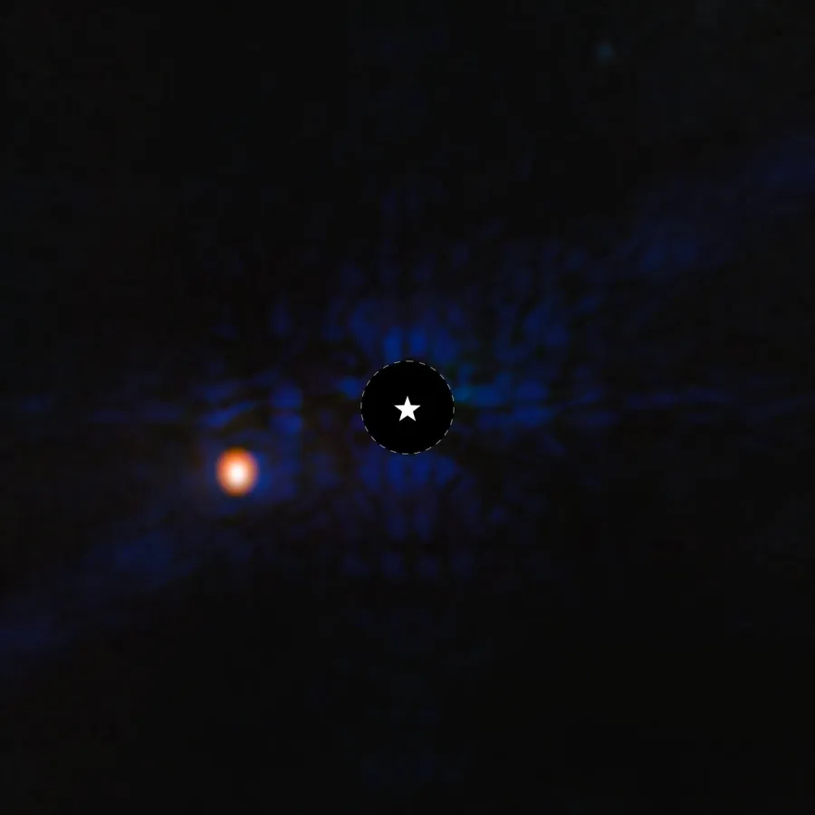

July 24, 2024
Epsilon Indi Ab: a cold giant planet imaged directly
Using the coronagraph of its MIRI instrument, the James Webb Space Telescope directly imaged the gas giant Epsilon Indi Ab. It orbits a star about 12 light-years away that is roughly as old as the Sun. Radial-velocity measurements had previously hinted at a giant planet; the imaged planet, however, is about twice as massive and somewhat farther from the star than expected.
At an estimated 2 degrees Celsius, it is one of the coldest exoplanets ever imaged directly and only about 100 degrees warmer than the gas giants of the Solar System. It has several Jupiter masses and is the closest known planet more massive than Jupiter.
Source: ESA/Webb: "Webb images cold exoplanet 12 light-years away", 2024-07-24